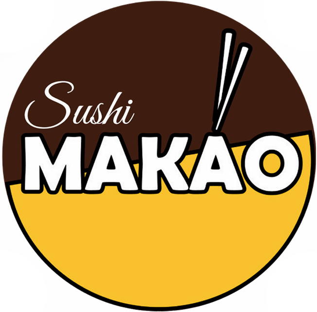

Sushi MAKAO
Síguenos, escríbenos, compra tu boleto de rifa o encuentra nuestra ubicación
🎟️ Comprar boleto de rifa / Datos de pago
Datos para transferencia bancaria
Realiza tu transferencia por el valor de tu boleto y envía el comprobante por WhatsApp para registrar tus datos y asignarte tu número de boleto.
Nombre del titular: ISMAEL XAVIER CIFUENTES CARVAJAL
Cédula: 1754449419
Banco: Pichincha
Tipo de cuenta: Ahorros
Número de cuenta: 2214394885
Correo: ismaelcifuentes928@gmail.com
Celular: +593 963519574
TÉRMINOS Y CONDICIONES
Rifa por Causa Académica – Sushi MAKAO
La presente rifa tiene como finalidad recaudar fondos para apoyar la participación de Ismael Cifuentes, estudiante ecuatoriano, en congresos académicos internacionales. La rifa cuenta con el apoyo y auspicio de Sushi MAKAO Restaurante & Delivery.
Al adquirir un boleto, el participante acepta los siguientes términos y condiciones:
1. Organizador y auspicio
La rifa es organizada con fines de apoyo académico para contribuir a la participación de Ismael Cifuentes en congresos internacionales y cuenta con el auspicio de Sushi MAKAO Restaurante & Delivery, local ubicado en Carcelén, Andrés Guillén, N84-90, 170302 Quito, Ecuador.
Sushi MAKAO participa como auspiciante y punto de apoyo para la difusión y realización del sorteo. La finalidad principal de la rifa es recaudar fondos destinados a apoyar la formación académica y representación internacional de Ismael Cifuentes.
2. Valor del boleto
El valor de cada boleto es de USD 3,00.
Cada boleto adquirido representa una oportunidad de participación en el sorteo. El participante deberá conservar su número de boleto, ya que este será utilizado para identificar al ganador.
3. Premios de la rifa
Los premios de la rifa son los siguientes:
- Mini refrigerador de 2 puertas.
- Dos visores de realidad virtual (VR).
- Combos de Sushi MAKAO.
Los premios serán entregados únicamente a los boletos que resulten ganadores durante el sorteo, de acuerdo con el orden y dinámica establecidos por la organización.
4. Fecha, lugar y modalidad del sorteo
El sorteo se realizará el día:
Sábado 29 de agosto de 2026
El sorteo se llevará a cabo de forma presencial en las instalaciones de:
Sushi MAKAO Restaurante & Delivery
Carcelén, Andrés Guillén, N84-90, 170302 Quito, Ecuador
Además, el sorteo será transmitido de forma virtual a través de las redes sociales oficiales de Sushi MAKAO:
- Facebook: @MAKAO
- Instagram: @makao_foo.d
- TikTok: @makao.food
La transmisión virtual se realizará con el objetivo de brindar transparencia a los participantes y permitir que puedan seguir el desarrollo del sorteo en vivo.
5. Requisitos para reclamar el premio
Para reclamar un premio, el participante deberá cumplir obligatoriamente con las siguientes condiciones:
- Poseer el boleto ganador correspondiente al sorteo.
- Presentar el número de boleto ganador o evidencia válida de compra del boleto.
-
Seguir todas las cuentas oficiales de Sushi MAKAO en redes sociales:
- Facebook: @MAKAO
- Instagram: @makao_foo.d
- TikTok: @makao.food
Solo se entregará el premio al participante cuyo boleto haya resultado ganador y que cumpla con todos los requisitos establecidos en estos términos y condiciones.
En caso de que el participante ganador no siga las cuentas oficiales indicadas, la organización podrá solicitarle que complete este requisito antes de proceder con la entrega del premio.
6. Verificación del ganador
La organización verificará el número de boleto ganador y podrá solicitar al participante los siguientes datos:
- Nombre completo.
- Número de cédula o documento de identidad.
- Número de teléfono.
- Ciudad de residencia.
- Captura o comprobante de seguimiento a las redes sociales oficiales de Sushi MAKAO.
- Comprobante de compra del boleto, en caso de ser necesario.
La entrega del premio se realizará únicamente después de verificar la validez del boleto y el cumplimiento de los requisitos establecidos.
7. Entrega de premios
La entrega de los premios será coordinada directamente con los ganadores después del sorteo.
Los premios podrán ser retirados en el local de Sushi MAKAO Restaurante & Delivery o mediante una modalidad acordada entre la organización y el ganador.
En caso de que el ganador no pueda retirar personalmente el premio, deberá coordinar previamente con la organización y presentar la información necesaria para validar su identidad y su boleto ganador.
Los costos de movilización, retiro o envío del premio, en caso de aplicar, deberán ser coordinados previamente con la organización.
8. Plazo para reclamar el premio
El ganador tendrá un plazo máximo de 15 días calendario a partir de la fecha del sorteo para reclamar su premio.
Si el premio no es reclamado dentro de este plazo, la organización podrá disponer del premio conforme considere pertinente, incluyendo la posibilidad de realizar un nuevo sorteo o asignarlo a otra actividad relacionada con la causa académica de Ismael Cifuentes.
9. Responsabilidad sobre los premios
Los premios se entregarán en el estado en que fueron anunciados y exhibidos en la promoción de la rifa.
La organización y Sushi MAKAO Restaurante & Delivery no serán responsables por daños, pérdidas, mal uso, fallas posteriores, garantías comerciales, incompatibilidades técnicas o cualquier inconveniente que ocurra después de la entrega del premio al ganador.
En el caso de productos sujetos a garantía de fabricante o proveedor, el ganador deberá gestionar cualquier reclamo directamente con el proveedor correspondiente, si aplica.
10. Transparencia del sorteo
El sorteo se realizará de manera pública, presencial y con transmisión virtual a través de las redes sociales de Sushi MAKAO.
La organización se compromete a realizar el sorteo de forma clara y transparente, mostrando el proceso de selección de los boletos ganadores durante la transmisión en vivo.
Los resultados podrán ser publicados posteriormente en las redes sociales de Sushi MAKAO o comunicados directamente a los ganadores.
11. Participación válida
Solo participarán en el sorteo los boletos que hayan sido vendidos y registrados correctamente antes del cierre de la venta de boletos.
No serán válidos boletos alterados, duplicados, ilegibles, falsificados o que no puedan ser verificados por la organización.
La organización se reserva el derecho de excluir cualquier boleto o participación que presente irregularidades.
12. Uso de imagen y difusión
Al participar en la rifa, el ganador autoriza a la organización y a Sushi MAKAO Restaurante & Delivery a publicar su nombre, fotografía, video o registro de entrega del premio en redes sociales, únicamente con fines de transparencia, evidencia de entrega y difusión de la actividad.
En caso de que el ganador no desee aparecer públicamente, deberá comunicarlo previamente a la organización.
13. Cambios o modificaciones
La organización se reserva el derecho de realizar ajustes razonables a la fecha, modalidad o logística del sorteo en caso de fuerza mayor, problemas técnicos, situaciones externas o circunstancias que impidan el desarrollo normal de la actividad.
Cualquier cambio será informado oportunamente a través de las redes sociales de Sushi MAKAO o los canales oficiales de comunicación de la rifa.
14. Aceptación de términos
La compra de un boleto implica la aceptación total de los presentes términos y condiciones.
El participante declara haber leído, entendido y aceptado las reglas de la rifa, así como los requisitos necesarios para reclamar un premio en caso de resultar ganador.
Asimismo, reconoce que la finalidad de la actividad es recaudar fondos para apoyar la participación académica internacional de Ismael Cifuentes.
15. Contacto
Para consultas sobre la rifa, compra de boletos o entrega de premios, los participantes podrán comunicarse a través del canal habilitado para la compra de boletos o mediante las redes sociales oficiales de Sushi MAKAO.
Sushi MAKAO Restaurante & Delivery
Facebook: @MAKAO
Instagram: @makao_foo.d
TikTok: @makao.food
Dirección: Carcelén, Andrés Guillén, N84-90, 170302 Quito, Ecuador
WhatsApp (Ismael Cifuentes): +593 96 351 9574